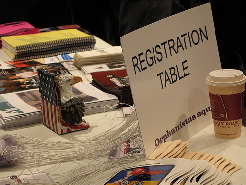

Photo by Rick Prelinger
Thursday morning at the Orphan Film Symposium began with an introduction and a welcome from Richard Allen and Dan Streible. Funders, the house staff, and all the participants were thanked in advance for their contributions to Orphans.
The first film of the day was a French film from 1906, Les Invisibles, or The Invisible Men. Musical accompaniment was provided by Dennis James on the piano. The film was full of optical inventions and early film magic. The narrative followed an alchemist in his cabinet of curiosities as he creates an invisibility potion. Hijinks ensue when the potion is stolen by two ne'er-do-wells. By the end, everyone has turned into dancing vegetables. A wonderful and iconoclast beginning to the day.

Les Invisibles, Pathe, 1906

Keynote Address, Paolo Cherchi Usai. Photo by Rick Prelinger
Paolo Cherchi Usai from the National Film and Sound Archive in Australia spoke after the film. He addressed the state of State AV archives and suggested that we are now entering a new era where analogue archives are viewed as "pre-digital." He predicted the core mission of archives switching emphasis from preservation towards accessibility. Digitization and internet availability is the current ambition of funders. Digital ingestion and de-accessioning is separating the responsibility of preserving. Usai saw de-accession as a new battleground, creating a new community of orphan films, and he proposed exercising selection in order to redefine what should be collected.
Comments (1)
As a Storyteller it was interesting to see what community you developed over this project. Sorry to have found it so late.
Posted by Charles | June 24, 2010 12:05 PM
Posted on June 24, 2010 12:05